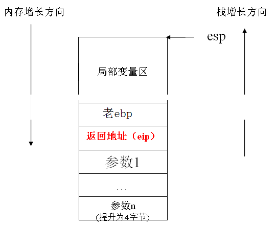
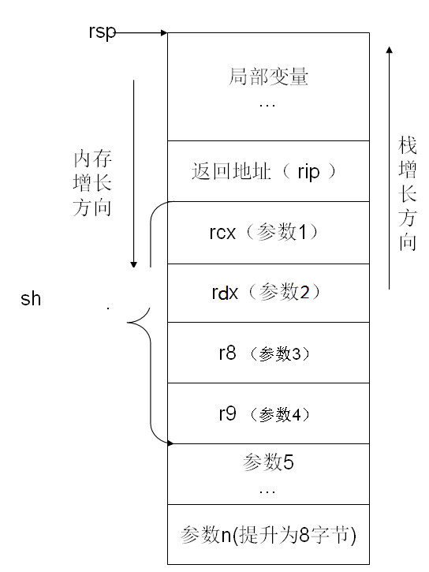
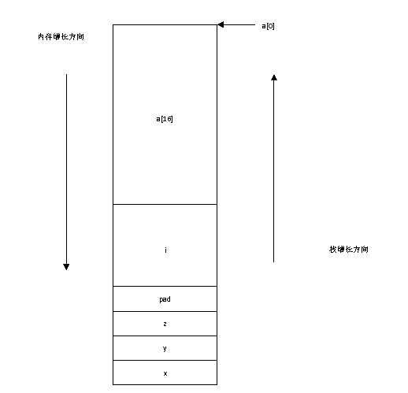
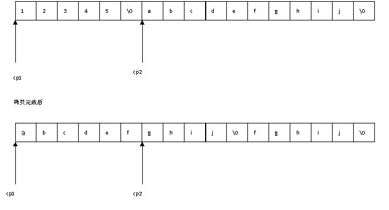
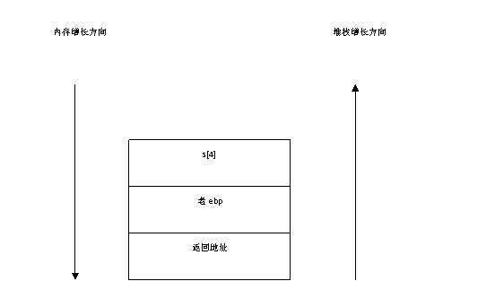
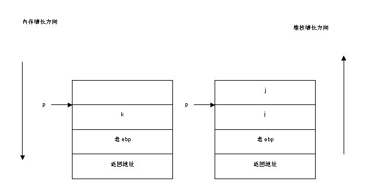
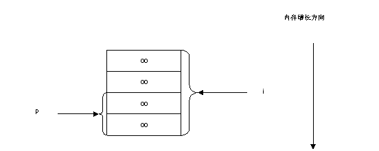
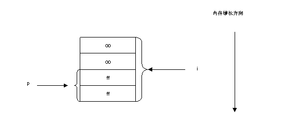

函数是程序的重要组成部分。你会发现一个程序里，大多数时候都是在编写和调用函数。在C语言中，函数又可以分为两类，一类是库函数（比如printf函数就是库函数），一类是自己实现的自定义函数。库函数是由库提供定义和实现，由程序员直接调用的函数。程序员只需要包含这个函数定义的头文件，就可以在程序中按照定义的格式来进行调用了。而自定义函数，就是需要程序员自己来定义和实现，然后才能调用的函数。
面向过程：procedure oriented programming POP
面向对象：object oriented programming OOP
面向过程是分析解决问题的步骤，然后用函数把这些步骤一步一步的实现，然后在使用的时候一一调用则可
面向对象是把构成问题的事务分解成各个对象，而建立对象的目的也不是为了完成一个个步骤，而是为了描述某个事物在解决整个问题的过程中所发生的行为。 以下面的例子来区分二者在解决问题时候的思维角度：
下雨的时候，人们为了防止被雨淋打开伞避雨：
面向过程，分为3个步骤：
下雨了,我打开了伞,挡雨
每个步骤实现一个函数，依次调用：
rain(雨); open(我，伞） prevent(伞,雨)
面向对象，分析3个对象以及它们的行为：
对象:我 伞 雨
行为:雨下，我打开伞，伞挡雨
rain,me,umbrella rain.fall(); me.open(umbrella) umbrella.prevent(rain)
面向过程是把问题分解成若干步骤，每个步骤实现一个函数，一步步实现，然后在使用的时候，把数据传递给这些函数，计算得出结果。面向对象是首先抽象出各种对象(比如上面的我，伞，雨)，把数据和解决问题的方法封装在对象中，然后各个对象之间通过行为发生作用
C语言是一种面向过程的编程语言，而C++却是一种面向对象的编程语言。在C++程序里，数据和对数据的处理都被封装在了一个对象里。
在面向对象的世界里，用类一个个的构造出对象来，在主程序里调用的是一个个对象的行为。
（1）对象是人们要进行研究的任何事物，从最简单的整数到复杂的飞机，以及人等均可看作对象，它不仅能表示具体的事物，还能表示抽象的规则、计划或事件。
（2）对象的状态和行为。
对象具有状态，一个对象用数据值来描述它的状态。
对象还有操作，用于改变对象的状态，对象及其操作就是对象的行为。
对象实现了数据和操作的结合，使数据和操作封装于对象的统一体中
（3）类。
具有相同特性（数据元素）和行为（功能）的对象的抽象就是类。因此，对象的抽象是类，类的具体化就是对象，也可以说类的实例是对象，类实际上就是一种数据类型。
类具有属性，它是对象的状态的抽象，用数据结构来描述类的属性。
类具有操作，它是对象的行为的抽象，用操作名和实现该操作的方法来描述。
在C语言中，把为了实现某一特定的功能的所有语句归纳在一起，就形成了一个函数。比如将两个数进行交换，求两个数中的最大数，将整数转换为字符串，这些功能都可以通过函数来实现。一般来说，函数只实现单一功能。如果一组代码是为了实现一个单一功能，则归纳出来，形成一个函数。
比如求2个数中的最大值的语句如下：
int x=7;
int y=31;
int max;
if (x>y)
max = x;
else
max = y;
那么把这些语句归纳一下，就可以写成下面的函数：
int max(int x, int y)//x，y为形参
{
int max;
if (x>y)
max = x;
else
max = y;
return max;
}
一般来说，函数的定义形式如下：
返回类型 函数名(参数列表)
{
函数的实现语句;
函数返回语句;
}
上面求最大值的函数中，max是函数名（也代表了函数的首地址），int是函数的返回值类型，而x,y是函数的输入参数。
假如要实现一个两个整数相加的功能，那么可以通过这样一个函数来实现：
int add(int x, int y)
{
int tmp;
tmp = x + y;
return tmp;
}
然后来调用该函数如下：
int main(int argc, char *argv[])
{
int a=7;
int b=15;
int res = max(a,b);
printf(“the max is:%d\n”,res);
}
在main函数中，我们把a,b传给函数max,max将把最大值返回后赋值给变量res。在这里，我们把a,b叫做实参，把max函数定义的时候参数列表中的x,y叫做形参。
当然，一个函数可以没有返回值，也可以没有参数，或者既没有返回值也没有参数。比如：
void function1(int x)
{
printf(“%d\n”, x);
return;
}
没有返回值。注意，如果没有写void，那么不是没有返回值，而是默认返回整型值。
void function2(void)
{
printf(“hello world!\n”);
}
函数的参数和返回值是一个需要值得注意的地方。函数的参数，既有输入参数，也有输出参数，而有的参数既做输入又做输出。比如：
int itoa(int a, char buff[], int len);
定义这么一个函数，int a, int len是输入参数，而char buff是输出参数，用来存储a转化为字符串之后的值。而int返回值，可以用来标记这个转换是否成功，以及失败之后的原因。
函数定义和实现了之后，可以提供给调用者调用。在调用函数的时候，传给函数的数据叫实参，而函数列表里的参数可以叫形参。实参的类型一定要和函数定义中的类型一致，否则会出问题。调用者叫caller，被调用者叫callee。
比如，在main函数里调用上面的add函数，那么就像下面来实现：
int main(void)
{
int a = 10; // a,b成为实参
int b = 5;
int c = add(a,b); // 把a和b相加，用c来存储a+b的返回值。
add(a+5, b-1); // 把a+5和b-1相加，不保存返回值。
add(1,2); // 把1和2相加，不保存返回值
return 0;
}
可见，传给函数add的参数，既可以是变量，也可以是表达式，还可以是常量。但前提是实参的类型必须和函数的定义类型是一致的，即在这里都应该是整型。
回调函数
回调函数就是一个通过函数指针调用的函数。如果你把函数的指针（地址）作为参数传递给另一个函数，当这个指针被用来调用其所指向的函数时，我们就说这是回调函数。回调函数不是由该函数的实现方直接调用，而是在特定的事件或条件发生时由另外的一方调用的，用于对该事件或条件进行响应。
⑴ 定义一个回调函数；
⑵ 提供函数实现的一方在初始化的时候，将回调函数的函数指针注册给调用者；
⑶ 当特定的事件或条件发生的时候，调用者使用函数指针调用回调函数对事件进行处理。
一般来说，在C语言里，算法逻辑都是通过函数来实现的。然后在main函数里直接调用这些函数。下面我们来应用函数，实现一些简单的算法和计算。
1 判断一年是否为润年
我们知道，如果一年能够被4整除并且不能被100整除那么它就是润年，或者一年能够被100整除同时也能被400整除那么它也是润年。根据这个判断标准，可以写出如下的函数来计算：
bool is_leap_year(int year)
{
return year%(year%100?400:4)?true:false;
}
int main(void)
{
int year = 1996;
printf(“%d %s a leap year”,year,is_leap_year(year)?”is”,”is not”);
return 0;
}
2 将一个字符变为小写字母
大写字母与小写字母之间的转换公式为：
char ch=’A’; char lowerch=ch +’a’-‘A’;
同时还要在转换的时候，判断输入参数是否为大写字母，判断条件为：
ch>=’A’&&ch<=’Z’
所以，可以得出如下函数：
int tolower(char ch)
{
if(ch>==’A’&&ch<=’Z’)
{
ch += ‘a’-‘A’;
}
return ch;
}
3 将一个字符串逆置
比如：“Hello world!”à”!dlrow olleH”
通过分析发现，要实现逆置功能，只需要将字符串的第0个字符和最后一个字符进行交换；第一个字符和倒数第二个字符交换。所以，假如字符串的长度为len，那么交换公式为：
0与len-1交换 1与len-1-1交换 2与len-1-2交换 i与len-1-i交换
交换从两边往中间移动，中间字符不用交换。因此，得到如下算法：
首先，写出用于计算字符串长度的函数：
size_t mystrlen(const char *str)
{
size_t len = 0;
while(*str!=’\0’)
{
str++;
len++;
}
return len;
}
void reverse_str(char *str)
{
size_t len =mystrlen(str);
for(int i = 0; i < len/2; i++)
{
char tmp = str[i];
str[i] = str[len-i-1];
str[len-i-1] = tmp;
}
}
int main(void)
{
char str[]=”Hello world”;
//注意，在测试的时候，此处不能定义为char *str=”Hello world”;
//想想为什么？
printf(“before:%s\n”, str);
reverse_str(str);
printf(“later:%s\n”, str);
return 0;
}
实现一个函数的注意事项：
1.函数的长度加上版权注释等信息一般不超过300行
2.明确输入输出
3.变量初始化
4.参数检测严进宽出
5.assert使用来判断参数的有效性合法性
6.时间与空间复杂度
7.边界考虑
8.函数的功能测试
9.return语句不可返回指向“栈内存”的“指针”或者“引用”，因为该内存单元在函数体结束时被自动释放。参见第八章《指针》
具体参见：实现与提高算法设计能力的一般方法
http://www.mallocfree.com/interview/algo-1-advice.htm
函数格式：
/*
* FunctionName
* Description:
*
*
*
* Arguments:
* arg1 description for arg1
* arg2 descriptsion for arg2
* Return:
* rtv1 description for rtv1
* rtv2 description for rtv2
*/
static wid_t
audiohd_find_dac(hda_codec_t *codec, wid_t wid,
int mixer, int *mixernum,
int exclusive, int depth)
{
...
...
...
...
} /* audiohd_find_dac() */
在C语言中调用函数的时候，将实参数据传递给函数的方式，可以分为传值，传指针，以及C++中的传引用。这里所谓的传值，传指针和传引用都是针对实参来说的，也就是传实参的值，实参的指针，实参的引用。
7.5.1 传值
下面是传值的函数定义方式，这是最简单的函数定义与传值方式：
void Func1(int x)
{
x = 1;
}
传值无法改变实参的值，因为传值的情况下，存放在栈上的形参只是实参值的一个拷贝，无法改变实参。
int main(int argc, char* argv[])
{
int a = 0;
Func1(a);
printf("%d\n",a);
return 0;
}
7.5.2 传指针
下面是传指针的函数定义方式，形参x是一个指向整数类型数据的地址。在函数内部通过*运算符来引用实参。
void Func2(int *x)
{
*x = 2;
}
传指针的时候，形参是实参地址的一个拷贝，因此通过*运算符来引用实参，实际上就是实参本身，因此可以通过传指针来修改实参的值。
int main(int argc, char* argv[])
{
int a = 0;
Func2(&a);
printf("%d\n",a);
return 0;
}
7.5.3 传引用
下面是在C++中的传引用调用方式，注意，形参部分使用的是&，而在函数内部，可以直接把形参当做实参来使用，此时形参就是对实参的一个引用。
void Func3(int &x)
{
x = 3;
}
传引用实际上也是传的实参的地址，是可以直接修改实参的。下面是在main函数里直接通过传引用的方式调用函数的方式：
int main(int argc, char* argv[])
{
int a = 0;
Func3(a);
printf("%d\n",a);
return 0;
}
那么C和C++里为什么要提供3种不同的函数传参方式呢？
一、传值不能改变实参，传指针和传引用才能改变实参；
二、传指针和传引用效率比传值要高。因为，传指针和传引用都只是把地址传递给函数，这个过程，只涉及到4个（8个，X64）字节的传输。传值，会随着实参的类型不同，有时候不止传递或者拷贝4个字节。（比如以后要学的结构体和C++对象）；
三、传引用比传指针更安全。因为引用一旦初始化，就固定了，不能改变；传引用比传指针简单。因此，传引用既有传指针的高效，又比传指针安全，又有传值的方便。
我们知道，程序中，将2个数交换的一般算法为：
int a = 10; int b = 15; int tmp=a; a = b; b=tmp;
那么将这段代码封装成一个函数，它的传参却很有讲究：
传值方式：
void swap1(int x, int y)
{
int tmp = x;
x = y;
y = tmp;
}
传指针方式：
void swap2(int *x, int *y)
{
int tmp = *x;
*x = *y;
*y = tmp;
}
传引用方式：
void swap3(int &x, int &y)
{
int tmp = x;
x = y;
y = tmp;
}
int main(void)
{
int a = 10;
int b = 20;
printf(“a=%d, b=%d\n”, a, b);
swap1(a, b );//传值，形参是实参值的一个拷贝
printf(“a=%d, b=%d\n”, a, b);
swap2(&a, &b );//传指针，形参是实参地址的一个拷贝
printf(“a=%d, b=%d\n”, a, b);
swap3(a, b );//传引用，形参是实参地址的一个拷贝
printf(“a=%d, b=%d\n”, a, b);
return 0;
}
运行上面的代码，大家会发现，swap1函数无法实现2个数的交换，swap2和swap3可以。这就是因为swap1采用的是传值方式，传值是无法修改实参的，当然就无法交换2个数a和b了，因为交换2个数，就是在修改2个实参的值，必须传指针或者传引用，或者以后通过宏来实现。
现在我们再来研究下函数的形参与返回值。我们将函数的声明信息，包括参数、返回值、调用约定（参考7.9一节）等称为函数的签名。
函数将数据处理完毕后的计算结果返回给调用者，可以通过返回值，也可以通过输出参数。
比如计算2个数的加法运算，那么函数的实现如下：
int add1(int x, int y)//将结果以返回值的方式传递给调用者
{
return x+y;
}
void add2(int x, int y, int *sum)//将结果以输出参数的方式
{
*sum=x+y;
return;
}
void add3(int x, int y, int &sum)//将结果以输出参数的方式
{
sum=x+y;
return;
}
上面定义的3个函数，add1将结果以返回值的形式返回给调用者;add2将结果通过第三个参数sum（传指针）的方式返回给调用者，我们把sum叫做输出参数，把x,y叫输入参数;add3通过第三个参数sum(传引用)的方式返回给调用者。
int main(void)
{
int a=10;
int b=15;
int res=0;
printf(“%d+%d=%d\n”,a,b,add1(a,b));
add2(a,b,&res);
printf(“%d+%d=%d\n”,a,b,res);
add3(a,b,res);
printf(“%d+%d=%d\n”,a,b,res);
return 0;
}
main函数的返回值与命令行参数，main函数的定义如下：
int main(int argc,char *argv[])
{
for(int i=0;i<argc;i++)
printf(“%s\n”, argv[i]);
return 0;
}
入口函数main()有2个输入参数，其中argc表示在运行程序的时候传递给程序的参数个数（程序名称算是第一个参数），argv[]是字符指针数组，里面存放这传递给程序的具体参数。当把上面的程序编译之后，加入编译后的名称叫：demo.exe，那么按照如下方式运行程序：
demo.exe p1 p2 p3
那么demo.exe将会获得4个参数，也就是argc为4，argv[0]为”demo.exe”，argv[1]为”p1”，argv[2]为p2，argv[3]为p3，所以程序输出为：
demo.exe p1 p2 p3
在函数内部计算数组空间的时候，一定要注意：当使用数组做函数参数的时候，数组在函数内部退化为指针。比如下面的例子：
int test_array(int a[],size_t len)
{
printf(“sizeof a:%d\n”,sizeof(a));
//在函数内部，arr已经退化为指针，此时长度为4（x86）或者为8（X64）
}
int main(void)
{
int arr[100]={0};
printf(“sizeof arr:%d\n”,sizeof(arr));
//此时arr作为数组，它的长度为400
test_array(a,sizeof(arr));
return 0;
}
所以，以后不能在函数内部计算实参数组的元素个数，必须把元素个数通过参数的方式传递给函数，否则会出现问题。
了解了函数传参的3种方式之后，现在来讨论一个问题，就是如果指针做实参，要在函数内部改变指针，应该怎么传参呢？
比如下面这段代码：
int main(void)
{
char *p = NULL;
get_memory();//如何定义get_memory函数和传参p
strcpy_s(p, 100,”hello world”);
printf(“%s\n”, p);
free(p);
p=NULL;
}
我们需要实现一个get_memory的函数，为main函数中的实参p分配一段100字节的内存，然后用来拷贝字符串”hello world”。这个过程，实际上就是在修改指针p的值（地址），以为开始p的值为NULL，通过get_memory函数分配内存之后，指针的值就是堆上的一个分配的内存地址。这个时候，指针作为实参，要修改实参，必须传实参的地址或者引用，也就是需要传指针的地址（也就是二级指针），或者指针的引用。
要理解指针变量的己型、己址、己值，与他型、他址、他址。
在函数中使用解引用是他址做左值，改变被调函数的中变量传址时的值。
在函数中使用己值做左值，是改变自己的值，与被调函数无关。
因此get_memory函数设计如下：
1 传指针的指针（二级指针）：
void get_memory(char **p)
{
*p=(char *)malloc(100);
}
调用方式：
get_memory(&p);
2 传指针的引用：
void get_memory(char *&p)
{
p=(char *)malloc(100);
}
调用方式：
Get_memory(p);
函数调用约定（Calling Convention），是一个重要的基础概念，用来规定调用者和被调用者是如何传递参数的，既调用者如何将参数按照什么样的规范传递给被调用者。
在参数传递中，有两个很重要的问题必须得到明确说明：
1．当参数个数多于一个时，按照什么顺序把参数压入堆栈；
2．函数调用后，由谁来把堆栈恢复原装。
假如在C语言中，定义下面这样一个函数：
int func(int x,int y, int z)
然后传递实参给函数func（）就可以使用了。但是，在系统中，函数调用中参数的传递却是一门学问。因为在CPU中，计算机没有办法知道一个函数调用需要多少个、什么样的参数，也没有硬件可以保存这些参数。也就是说，计算机不知道怎么给这个函数传递参数，传递参数的工作必须由函数调用者和函数本身来协调。为此，计算机用栈来支持参数传递。
函数调用时，调用者依次把参数压栈，然后调用函数，函数被调用以后，在堆栈中取得数据，并进行计算。函数计算结束以后，或者调用者、或者函数本身修改堆栈，使堆栈恢复原装。
在高级语言中，通过函数调用约定来说明参数的入栈和堆栈的恢复问题。常见的调用约定有：
stdcall cdecl fastcall thiscall naked call
不同的调用规约，在参数的入栈顺序，堆栈的恢复，函数名字的命名上就会不同。在编译后的代码量，程序执行效率上也会受到影响。
7.9.1 stdcall调用规约
stdcall调用约定声明的格式：
int __stdcall func(int x,int y)
stdcall的调用约定意味着：
参数入栈规则：参数从右向左压入堆栈
还原堆栈者：被调用函数自身修改堆栈
函数名自动加前导的下划线，后面紧跟一个@符号，其后紧跟着参数的尺寸。
在微软Windows的C/C++编译器中，常常用Pascal宏来声明这个调用约定，类似的宏还有WINAPI和CALLBACK。
int __stdcall func1(int x, int y)
{
return x+y;
}
int __stdcall func1(int x, int y)//采用stdcall
{
42D640 push ebp
0042D641 mov ebp,esp
0042D643 sub esp,0C0h
0042D649 push ebx
0042D64A push esi
0042D64B push edi
0042D64C lea edi,[ebp-0C0h]
0042D652 mov ecx,30h
0042D657 mov eax,0CCCCCCCCh
0042D65C rep stos dword ptr es:[edi]
return x+y;
0042D65E mov eax,dword ptr [x]
0042D661 add eax,dword ptr [y]
}
0042D664 pop edi
0042D665 pop esi
0042D666 pop ebx
0042D667 mov esp,ebp //ebp（调用前的栈顶）放入esp中，然后出栈，恢复老ebp
0042D669 pop ebp
0042D66A ret 8 //被调用者负责栈平衡，ret 8,esp += 8;
7.9.2 cdecl调用规约
cdecl调用约定又称为C调用约定，是C语言缺省的调用约定，它的定义语法是：
int func (int x ,int y) //默认的C调用约定 int __cdecl func (int x,int y) //明确指出C调用约定
该调用约定遵循下面的规则：
参数入栈顺序：从右到左
还原堆栈者：调用者修改堆栈
函数名：前加下划线：_func
由于每次函数调用都要由编译器产生还原堆栈的代码，所以使用__cdecl方式编译的程序比使用__stdcall方式编译的程序要大很多，但是 __cdecl调用方式是由函数调用者负责清除栈中的函数参数，所以这种方式支持可变参数，比如printf()和Windows的API wsprintf()就是__cdecl调用方式。
由于参数按照从右向左顺序压栈，因此最开始的参数在最接近栈顶的位置，因此当采用不定个数参数时，第一个参数在栈中的位置肯定能知道，只要不定的参数个数能够根据第一个后者后续的明确的参数确定下来，就可以使用不定参数了。
int __cdecl func2(int x, int y)
{
return x+y;
}
11: int __cdecl func2(int x, int y)
12: {
00401070 55 push ebp
00401071 8B EC mov ebp,esp
00401073 83 EC 40 sub esp,40h
00401076 53 push ebx
00401077 56 push esi
00401078 57 push edi
00401079 8D 7D C0 lea edi,[ebp-40h]
0040107C B9 10 00 00 00 mov ecx,10h
00401081 B8 CC CC CC CC mov eax,0CCCCCCCCh
00401086 F3 AB rep stos dword ptr [edi]
13: return x+y;
00401088 8B 45 08 mov eax,dword ptr [ebp+8]
0040108B 03 45 0C add eax,dword ptr [ebp+0Ch]
14: }
0040108E 5F pop edi
0040108F 5E pop esi
00401090 5B pop ebx
00401091 8B E5 mov esp,ebp
00401093 5D pop ebp
00401094 C3 ret;直接返回，由调用者负责平衡栈

cdecl与stdcall的调用栈示意图
7.9.3 fastcall调用规约
fastcall的声明语法为：
int fastcall func (int x,int y)
该调用约定遵循下面的规则：
参数入栈顺序：函数的第一个和第二个参数通过ecx和edx传递，剩余参数从右到左入栈
还原堆栈者：被调用者修改堆栈
函数名自动加前导的下划线，后面紧跟一个@符号，其后紧跟着参数的尺寸
以fastcall声明执行的函数，具有较快的执行速度，因为部分参数通过寄存器来进行传递的。
int __fastcall func3(int x, int y,int z)
{
return x+y+z;
}
16: int __fastcall func3(int x, int y, int z)
17: {
004010A0 55 push ebp
004010A1 8B EC mov ebp,esp
004010A3 83 EC 48 sub esp,48h
004010A6 53 push ebx
004010A7 56 push esi
004010A8 57 push edi
004010A9 51 push ecx
004010AA 8D 7D B8 lea edi,[ebp-48h]
004010AD B9 12 00 00 00 mov ecx,12h
004010B2 B8 CC CC CC CC mov eax,0CCCCCCCCh
004010B7 F3 AB rep stos dword ptr [edi]
004010B9 59 pop ecx
004010BA 89 55 F8 mov dword ptr [ebp-8],edx
004010BD 89 4D FC mov dword ptr [ebp-4],ecx
18: return x+y+z;
004010C0 8B 45 FC mov eax,dword ptr [ebp-4]
004010C3 03 45 F8 add eax,dword ptr [ebp-8]
004010C6 03 45 08 add eax,dword ptr [ebp+8]
19: }
004010C9 5F pop edi
004010CA 5E pop esi
004010CB 5B pop ebx
004010CC 8B E5 mov esp,ebp
004010CE 5D pop ebp
004010CF C2 04 00 ret 4 ;返回时，被调用者做栈平衡，x,y在寄存器中，所以清空4个字节
注意，在X64平台，默认使用了fastcall调用约定，其规则如下：
1 一个函数在调用时，前四个参数是从左至右依次存放于RCX、RDX、R8、R9寄存器里面，剩下的参数从右至左顺序入栈；栈的增长方向为从高地址到低地址
2 浮点前4个参数传入XMM0、XMM1、XMM2 和 XMM3 中。其他参数传递到堆栈中。
3 调用者负责在栈上分配32字节的“shadow space”，用于存放那四个存放调用参数的寄存器的值（亦即前四个调用参数）；小于64位(bit)的参数传递时高位并不填充零（例如只传递ecx），大于64位需要按照地址传递；
4 调用者负责栈平衡；
5 被调用函数的返回值是整数时，则返回值会被存放于RAX；浮点数返回在xmm0中
6 RAX，RCX，RDX，R8，R9，R10，R11是“易挥发”的，不用特别保护(所谓保护就是使用前要push备份），其余寄存器需要保护。（x86下只有eax, ecx, edx是易挥发的）
7 栈需要16字节对齐，“call”指令会入栈一个8字节的返回值（注：即函数调用前原来的RIP指令寄存器的值），这样一来，栈就对不齐了（因为RCX、RDX、R8、R9四个寄存器刚好是32个字节，是16字节对齐的，现在多出来了8个字节）。所以，所有非叶子结点调用的函数，都必须调整栈RSP的地址为16n+8，来使栈对齐。比如sub rsp,28h
8 对于 R8～R15 寄存器，我们可以使用 r8, r8d, r8w, r8b 分别代表 r8 寄存器的64位、低32位、低16位和低8位。
X64调用栈示意图
使用了上述调用约定的main函数对应汇编分析：
int main(int argc, char* argv[])
{
func1(1, 2);
func2(1, 2);
func3(1, 2);
printf("Hello World!\n");
return 0;
}
//func1采用stdcall，参数2,1从右往左，依次入栈：先push 2,再push 1 //栈平衡由被调用者自己完成 24: func1(1, 2); 004010F8 6A 02 push 2 004010FA 6A 01 push 1 004010FC E8 1D FF FF FF cal@ILT+25(func1) (0040101e) //func2采用cdecl，参数从右往左依次入栈，先push 2,再push 1 //栈平衡由调用者负责完成：add esp, 8 25: func2(1, 2); 00401101 6A 02 push 2 00401103 6A 01 push 1 00401105 E8 0F FF FF FF cal @ILT+20(func2) (00401019) 0040110A 83 C4 08 add esp,8//栈平衡在调用者这边完成 //func3采用fastcall，参数前2个进入ecx和edx，剩下的从右往左依次入栈 //栈平衡由被调用者完成 26: func3(1, 2, 3); 0040110D 6A 03 push 3;第三个参数入栈 0040110F BA 02 00 00 00 mov edx,2;第二个参数入edx 00401114 B9 01 00 00 00 mov ecx,1;第一个参数入ecx 00401119 E8 0A FF FF FF cal @ILT+35(func3) (00401028)
7.9.4 naked call调用规约
这是一个不常用的调用约定，编译器不会给这种函数增加初始化和清理代码，也不能用return语句返回值，只能程序员控制，插入汇编返回结果。因此它一般用于驱动程序设计，比如inline hook等。假设定义一个求减的减法程序，可以定义为：
__declspec(naked) int sub(int a,int b)
{
__asm mov eax,a
__asm sub eax,b
__asm ret
}
上面讲解了函数的各种调用规约。那么如果定义的约定和使用的约定不一致，会出现什么样的问题呢？结果就是：则将导致栈被破坏。最常见的调用规约错误是：
1. 函数原型声明和函数体定义不一致
2. DLL导入函数时声明了不同的函数约定
此外，thiscall是C++类成员函数缺省的调用约定，但它没有显示的声明形式。因为在C++类中，成员函数调用还有一个this指针参数，因此必须特殊处理，thiscall意味着：
参数入栈：参数从右向左入栈
this指针入栈：如果参数个数确定，this指针通过ecx传递给被调用者；如果参数个数不确定，this指针在所有参数压栈后被压入堆栈。
堆栈恢复：对参数个数不定的，调用者清理堆栈，否则函数自己清理堆栈。
7.9.5 C语言活动记录（栈帧）
下面来研究C语言的活动记录，即它的栈帧。所谓的活动记录，就是在程序执行的过程中函数调用时栈上的内容变化。一个函数被调用，反映在栈上的与之相关的内容被称为一个帧，其中包含了参数，返回地址，老ebp值以及局部变量，以及esp，ebp。
图就是程序执行时的一个活动记录。C语言的默认调用规约为cdecl。因此C语言的活动记录中，参数是从右往左依次入栈。之后是函数的返回地址入栈，接着是ebp入栈。
图7-5 C语言活动记录
图7-5非常重要，建议读者朋友们一定要对该图做到胸有成竹。可以用图7-5来分析很多实际问题。比如，可以用ebp+8取得第一个参数，然后依次取得第二个，第三个，第N个参数。也可以通过ebp-N来获得栈中的局部变量。
1．分析下面程序运行情况，有什么问题呢？
1 #include <stdio.h>
2 void main(void)
3 {
4 char x,y,z;
5 int i;
6 int a[16];
7 for(i=0;i<=16;i++)
8 {
9 a[i]=0;
10 printf("\n");
11 }
12 return 0;
13 }
在分析程序执行时，一个重要的方法就是首先画出它的活动记录。根据它的活动记录，去分析它的执行。对于本题的问题，画出了图7-6的活动记录。
图7-6 程序活动记录
结合该活动记录，通过对程序的执行分析，for循环中对数组的访问溢出了。那么溢出的后果是什么呢？通过图7-6 的活动记录，大家可以看出a[16]实际上对应的是变量i。因此循环的最后一次执行的时候，实际上a[16] = 0就是将i值重新设为了0，于是i永远也不会大于16。因此整个程序中for循环无法退出，程序陷入死循环。
2．考虑下面的C程序：
void main(void)
{
char *cp1, *cp2;
cp1 = "12345";
cp2 = "abcdefghij";
strcpy(cp1, cp2);
printf("cp1 = %d\ncp2 = %s\n", cp1, cp2);
}
该程序经某些C编译器的编译，其目标程序运行的结果是：
cp1 = abcdefghij
cp2 = ghij
试分析，为什么cp2所指的串被修改了？
答案：因为常量串"12345"和"abcdefghij"连续分配在常数区，执行两个赋值语句后，cp1和cp2分别等于字符1和a所在的地址。如图7-7所示：
图7-7 字符串拷贝时内存布局
执行串拷贝语句后，常数区变成图中所示，cp1和cp2所指的地址没有变，所以cp2所指的串被修改了。
3．一个C语言程序如下：
void func(void)
{
char s[4];
strcpy(s, "12345678");
printf("%s\n", s);
}
void main(void)
{
func();
printf("Return from func\n");
}
该程序在X86/Linux操作系统上运行的结果如下：
12345678
Return from func
Segmentation fault(core dumped)
试分析为什么会出现这样的运行错误。
答案：func()函数的活动记录如图7-8所示。在执行字符串拷贝函数之后，由于”12345678”长度大于4个字节，而strcpy()并不检查字符串拷贝是否溢出，因此造成s[4]数组溢出。s[4]数组的溢出正好覆盖了老ebp的内容，但是返回地址并没被覆盖。所以程序能够正常返回。但由于老ebp被覆盖了，因此从main()函数返回后，出现了段错误。因此，造成该错误结果的原因就是func()函数中串拷贝时出现数组越界。
图7-8 func()函数的活动记录
4．下面程序在SPARC/SUN工作站（整数存放方式是高位优先）上运行陷入死循环，试说明原因。如果将第7行的long *p改成short *p，并且将第22行long k改成short k后，loop中的循环体执行一次便停止了。试说明原因。
void main(void)
{
addr();
loop();
}
long *p;
void loop(void)
{
long i, j;
j = 0;
for (i = 0; i < 10; i++)
{
(*p)--;
j++;
}
}
void addr(void)
{
long k;
k = 0;
p =& k;
}
分析：
首先变量p是一个全局变量，因此在程序执行期间都有效。然后画出了addr() 和loop()的活动记录如图7-9所示。由addr()和loop()的活动记录，可以看出，p在addr()执行结束之后，在loop()执行之时指向了i。
图7-9 addr()和loop()活动记录
当第一次执行循环时，i=0，p的类型为long *，(*p)--之后i为-1，之后i++，i为0。所以i的值在0与-1之间变化，但始终小于10，因此无法退出循环而造成了死循环。
而当p的类型为short*，k为short类型时，p指向了i的高2字节。(*p)--运算前后i的值的情况如图7-10和7-11所示：
图7-10 (*p)--之前i的值
图7-11 (*p)--之后i的值
由于此时p 为short*类型，所以只有i的高2字节参加了运算，此时(*p)--后，i的高2字节为-1，即0xffff。所以对于long类型的i来说，由于系统是高位优先存储整数，那么它的值为：0x0000ffff，即4294901760，远远大于了10。因此循环执行了一次便停止了。
综上分析，程序运行时陷入死循环的原因是由于p指向分配给i的存储单元引起的。循环体执行一次便停止是由于p指向分配给i的高位引起的。可见，要解答好此题，必须要牢固掌握C语言的活动记录和整数的存储方式。
5．试分析下面程序在X86平台的输出结果：
//限定x86平台
#include "stdafx.h"
#include <windows.h>
#include <string.h>
int _tmain(int argc, _TCHAR* argv[])
{
int x=5;
float y=3.1f;
printf("int x=%d,float x=%f,y=%f,y=%d\n",x,x,y,y);
//注意，第二次打印x的时候，x被当做了float打印
return 0;
}
输出为：int x=5,float x=-2.000000,y=-2.000000,y=1074318540
为什么y被赋值为3.1f，打印的结果却是-2.000000呢?
分析请参考：函数调用约定解释诡异程序输出
在用C语言编写程序的时候，除了调用自己编写的函数之外，很多时候还需要调用库函数，才能完成对应的功能。库函数又分为标准库函数，编译器中提供的库函数，以及第三方的库函数。
C标准中就提供了很多标准库函数，比如大家已经接触到了的C语言文件操作函数，标准IO函数等，都是C语言的标准库函数。C语言的标准库函数与平台无关，即可以在任何支持C语言的平台下调用，比如Linux平台或者Windows平台。
在Windows平台，库函数是以.lib文件或者.dll文件与头文件的形式发布的，而在Linux平台，库函数则是以.a或者.so文件与头文件的形式提供的。其中，头文件里提供了库函数的定义。而.lib/.dll文件以及.a与.so文件里提供了库函数的二进制实现。
要调用库函数，就需要获得这些库函数的相关文件。大多数C标准库函数编译器都会提供。因此，只要包含其中的头文件，就可以直接调用了。
而对于一些常见的第三方库函数，将在37章中进一步介绍。而如何制作自己的函数库，将在31章里详细介绍。
本章将主要介绍一些常见的库函数的应用方法。体会一下如何使用库函数来编写程序实现功能。
为了实现程序的可移植性，应当尽量调用那些标准的C语言库函数。否则，所调用的函数在新的平台，不一定能够获得支持。
7.10.1常用库函数应用
1 时间函数
在C语言里，关于时间的表示分两种：struct tm和time_t。
日历时间（Calendar Time）是通过time_t数据类型来表示的，用time_t表示的时间（日历时间）是从一个时间点（例如：1970年1月1日0时0分0秒）到此时的秒数。在time.h中，我们也可以看到time_t是一个长整型数：
#ifndef _TIME_T_DEFINED typedef long time_t; /* 时间值 */ #define _TIME_T_DEFINED /* 避免重复定义 time_t */ #endif
大家可能会产生疑问：既然time_t实际上是长整型，到未来的某一天，从一个时间点（一般是1970年1月1日0时0分0秒）到那时的秒数（即日历时间）超出了长整形所能表示的数的范围怎么办？对time_t数据类型的值来说，它所表示的时间不能晚于2038年1月18日19时14分07秒。为了能够表示更久远的时间，一些编译器厂商引入了64位甚至更长的整形数来保存日历时间。比如微软在Visual C++中采用了__time64_t数据类型来保存日历时间，并通过_time64()函数来获得日历时间（而不是通过使用32位字的time()函数），这样就可以通过该数据类型保存3001年1月1日0时0分0秒（不包括该时间点）之前的时间。
我们可通过tm结构来获得日期和时间，tm结构在time.h中的定义如下：
#ifndef _TM_DEFINED
struct tm {
int tm_sec; /* 秒 – 取值区间为[0,59] */
int tm_min; /* 分 - 取值区间为[0,59] */
int tm_hour; /* 时 - 取值区间为[0,23] */
int tm_mday; /* 一个月中的日期 - 取值区间为[1,31] */
int tm_mon; /* 月份（从一月开始，0代表一月） - 取值区间为[0,11] */
int tm_year; /* 年份，其值等于实际年份减去1900 */
int tm_wday; /* 星期 – 取值区间为[0,6]，其中0代表星期天，1代表星期一，以此类推 */
int tm_yday; /* 从每年的1月1日开始的天数 – 取值区间为[0,365]，
其中0代表1月1日，1代表1月2日，以此类推 */
int tm_isdst; /* 夏令时标识符，实行夏令时的时候，tm_isdst为正。
不实行夏令时的进候，tm_isdst为0；不了解情况时，tm_isdst()为负。*/
};
#define _TM_DEFINED
#endif
通过time()函数来获得日历时间（Calendar Time），其原型为：
time_t time(time_t * timer); struct tm * gmtime(const time_t *timer); struct tm * localtime(const time_t * timer);
其中gmtime()函数是将日历时间转化为世界标准时间（即格林尼治时间），并返回一个tm结构体来保存这个时间，而localtime()函数是将日历时间转化为本地时间。
可以通过asctime()函数和ctime()函数将时间以固定的格式显示出来，两者的返回值都是char*型的字符串。返回的时间格式为：
星期几 月份 日期 时:分:秒 年\n\0
例如：Wed Jan 02 02:03:55 1980\n\0
其中\n是一个换行符，\0是一个空字符，表示字符串结束。下面是两个函数的原型：
char * asctime(const struct tm * timeptr); char * ctime(const time_t *timer);
其中asctime()函数是通过tm结构来生成具有固定格式的保存时间信息的字符串，而ctime()是通过日历时间来生成时间字符串。这样的话，asctime（）函数只是把tm结构对象中的各个域填到时间字符串的相应位置就行了，而ctime（）函数需要先参照本地的时间设置，把日历时间转化为本地时间，然后再生成格式化后的字符串。
#include "stdio.h"
#include "stdlib.h"
#include "time.h"
int main(void)
{
struct tm *ptr;
time_t lt;
lt =time(NULL);
ptr=gmtime(<);
printf(asctime(ptr));
printf(ctime(<));
return 0;
}
自定义时间格式
我们可以使用strftime（）函数将时间格式化为我们想要的格式。它的原型如下：
size_t strftime(
char *strDest,
size_t maxsize,
const char *format,
const struct tm *timeptr
);
我们可以根据format指向字符串中格式命令把timeptr中保存的时间信息放在strDest指向的字符串中，最多向strDest中存放maxsize个字符。该函数返回向strDest指向的字符串中放置的字符数。
函数strftime()的操作有些类似于sprintf()：识别以百分号(%)开始的格式命令集合，格式化输出结果放在一个字符串中。格式化命令说明串strDest中各种日期和时间信息的确切表示方法。格式串中的其他字符原样放进串中。格式命令列在下面，它们是区分大小写的。
%a 星期几的简写 %A 星期几的全称 %b 月分的简写 %B 月份的全称 %c 标准的日期的时间串 %C 年份的后两位数字 %d 十进制表示的每月的第几天 %D 月/天/年 %e 在两字符域中，十进制表示的每月的第几天 %F 年-月-日 %g 年份的后两位数字，使用基于周的年 %G 年分，使用基于周的年 %h 简写的月份名 %H 24小时制的小时 %I 12小时制的小时 %j 十进制表示的每年的第几天 %m 十进制表示的月份 %M 十时制表示的分钟数 %n 新行符 %p 本地的AM或PM的等价显示 %r 12小时的时间 %R 显示小时和分钟：hh:mm %S 十进制的秒数 %t 水平制表符 %T 显示时分秒：hh:mm:ss %u 每周的第几天，星期一为第一天 （值从0到6，星期一为0） %U 第年的第几周，把星期日做为第一天（值从0到53） %V 每年的第几周，使用基于周的年 %w 十进制表示的星期几（值从0到6，星期天为0） %W 每年的第几周，把星期一做为第一天（值从0到53） %x 标准的日期串 %X 标准的时间串 %y 不带世纪的十进制年份（值从0到99） %Y 带世纪部分的十进制年份 %z，%Z 时区名称，如果不能得到时区名称则返回空字符。 %% 百分号
如果想显示现在是几点了，并以12小时制显示，就象下面这段程序：
//显示现在是几点了，并以12小时制显示
/* Date : 10/24/2007 */
/* Author: Eman Lee */
#include "stdio.h"
#include "stdlib.h"
#include "time.h"
int main(void)
{
struct tm *ptr;
time_t localTime;
char str[80];
localTime=time(NULL);
ptr=localtime(&localTime);
strftime(str,100,"It is now %I %p\n",ptr);
printf(str);
return 0;
}
#include "stdio.h"
#include "stdlib.h"
#include "time.h"
int main( void )
{
struct tm *newtime;
char tmpbuf[128];
time_t localTime1;
time( &localTime1 );
newtime=localtime(&localTime1);
strftime( tmpbuf, 128, "Today is %A, day %d of %B in the year %Y.\n", newtime);
printf("%s\n",tmpbuf);
return 0;
}
2 随机函数
C语言标准库中提供了一个随机函数：rand()，用于生成各种随机值。随机函数需要首先指定随机不同种子，否则每次随机函数生成的随机值将不会改变。一般调用srand()来指定随机种子，可以使用当前时间time(0)作为随机种子。
比如下面的代码，将会产生10个13以内的随机值。
int main(void)
{
srand(time(0));//指定随机种子
for(int i=0;i<13;i++)
{
int r = rand()%13;//产生随机数
printf(“%d\n”, r);
}
system(“pause”);
return 0;
}
要调用库函数，首先应该弄清楚该库函数的定义。也就是这个库函数有几个参数，每个参数的类型是什么。那么传给这些库函数的参数类型必须与声明的参数类型一致，否则无法通过编译。
7.10.2 阻塞与非阻塞函数同步与异步
常常见到同步(Sync)/异步(Async)，阻塞(Block)/非阻塞(Unblock)四种调用方式。
1 同步：
所谓同步，就是在发出一个功能调用时，在没有得到结果之前，该调用就不返回。也就是必须一件一件事做,等前一件做完了才能做下一件事。
2 异步：
异步的概念和同步相对。当一个异步过程调用发出后，调用者不能立刻得到结果，但也不会等待结果，函数会立即返回。实际处理这个调用结果是在完成后，通过事件(event)状态、通知和回调来通知调用者获取数据。
3 阻塞：
阻塞调用是指在同步调用结果返回之前，当前线程会被挂起（线程进入非可执行状态，在这个状态下，cpu不会给线程分配时间片，即线程暂停运行）。函数只有在得到结果之后才会返回。
有人也许会把阻塞调用和同步调用等同起来，实际上是不同的。对于同步调用来说，很多时候当前线程还是激活的，只是从逻辑上当前函数没有返回而已。 例如，我们在socket中调用recv函数，如果缓冲区中没有数据，这个函数就会一直等待，直到有数据才返回。而此时，当前线程还会继续处理各种各样的消息。所以，同步调用中的函数，既可以是阻塞的，也可以是非阻塞的。但阻塞的调用方法，一定是同步的。
4 非阻塞：
非阻塞和阻塞的概念相对应，指在不能立刻得到结果之前，该函数不会阻塞当前线程，一直处于激活状态，也不会让出CPU。
库函数还有多线程的考虑。比如在Windows里：MT/MD/MTD/MDD。在linux中，同样需要注意多线程的考虑。最好调用使用支持多线程安全的库。如库不支持，程序员就需要自己去实现。
7.10.3 常用库函数
程序员在编写程序的时候，都会调用库函数来实现特定的功能。库函数很多，一个程序员不可能把所有的库函数都记住。只需要在调用的时候查阅相应的文档，按照库函数的声明方式去调用就可以了。
虽然并不要求程序员把所有的库函数都记住，但是一些常见的库函数，依然需要非常熟练和记住。比如内存操作库函数，字符串函数等。由于这些库函数非常常用，所以，如果在使用这些函数的时候不熟练，用一次去查一次文档，那么写程序的效率就会很差。
下面列出一些常用的内存和字符串操作函数：
内存函数：memset()/memcpy()/malloc()/free()/memcmp()
void memset(void *src, int v, size_t len); void memcpy(void *src, void *dst, size_t len);
字符串函数：strstr()/strcpy_s()/strchr()/strcat_s()/strcmp()/strlen()
7.11 头文件
一般我们会把自己定义的函数或者结构以及全局变量放入头文件中，供别的地方的源文件引用。同时，系统库中的函数，结构以及全局变量也是放入对应的头文件中，在调用的时候，也需要在源文件中包含和引用。
头文件的定义方式：
//myfile.h
#ifndef _MYFILE_H_
#define _MYFILE_H_
int func(int x,int y);
int g_value=0 ;
typedef struct _node
{
int value;
struct _node *next;
}node,*pnode;
#endif
这样把头文件内容通过条件编译包含在里面，可以防止在项目中多次重复包含和编译头文件。而在源文件中如何包含头文件呢？
//myfile.cpp #include “myfile.h” #include <stdio.h> …
上面的myfile.cpp中通过#include分别包含了myfile.h与C标准库中的stdio.h头文件。但是二者之间也有细微差别。包含自己定义的头文件myfile.h的时候，使用的是””，而在包含系统的库文件stdio.h的时候，使用的是<>。它们的区别是，使用””包含的头文件，在编译的时候搜索的路径是从当前项目位置开始搜索的，而使用<>包含的头文件，在编译的时候搜索的路径是从系统目录开始搜索的。所以区别对待，可以提高搜索的速度。
本页共1063段，28367个字符，51760 Byte(字节)